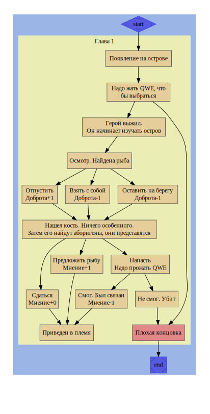

Страница, созданная специально для Ярика. Как много чести, правда?
Сюжет
🖌 Идея
Главный герой терпит крушение и попадает на остров. Он натыкается на одно из поселений а позже обнаруживает второе. В итоге герой выясняет, что эти поселения когда то имели тесный контакт, но сейчас они враждуют и грядет война, в которой будет убито много невинных. Как герой выберется с острова и разрулит ли он эту ситуацию - зависит от действий
👥 Известные персонажи и места
Герой
Имя, возраст, пр.
Описание
Мотивация
👤 Главный герой 1
Саймон
Главный герой игры. Попадает на остров, так как его корабль был разрушен
Хочет выжить и вернуться домой, построив новый корабль
👤 Главный герой 2
Даниель
Так же главный герой игры. Является играбельным
Хочет покинуть рабство
👤 Главный герой 3
Нет информации
🏠 Поселение 1
-
Нет никакой информации
Хотят развязать войну с поселением 2
🏠 Поселение 2
-
Нет никакой информации
Хотят развязать войну с поселением 1
👥 Аборигены
-
Населяют поселения. Говорят на ломанном языке, так как были обучены иностранцами, которые на данный момент находятся в плену
Мотивация привязана к поселению
👥 Пленные
-
Иностранцы. Рабы, работающие на поселения. Обучили языку. Лор неизвестен
⚠ Хотят устроить бунт
🗺 Карта сюжета

🏹 Выборы и ветвления
Местоположение
Выбор
Результат
Глава 1
Для того, что бы выжить, надо быстро прожимать QWE
При достаточных усилиях герой выживет. Иначе - конец игры
Глава 1
Персонаж находит рыбу, кроме костей и хлама. Оставить, отпустить, забрать
Отпустить = Доброта+1; Оставить = Доброта-1; Взять = Доброта-1
Глава 1
Персонажа находят аборигены. Сдаться, дать рыбу, напасть
При достаточных усилиях герой выживет. Иначе - конец игры
📚 Черновик
Глава 1
Саймон вел свой корабль направляясь уже домой после небольшого путешествия со своей командой. Но один из экипажа допустил ошибку и указал неверный путь, тем самым подписав смертный приговор всему составу корабля. Судно попадает в сильный шторм, от чего корабль буквально расстворяется в воде, куда делись остальные члены экипажа - неизвестно. Наш капитан Саймон просыпается на небольшом деревянном корабля, который способен выдержать человека. Кроме него ничего вокруг нет, но если посмотреть в сторону запада - можно увидеть остров. Импровизированный плот выглядит ненадежно - скоро он развалится. Надо как можно скорее догребсти до острова
⚠️ Получение управления: для того что бы плыть дальше, надо нажимать QWE, как можно быстрее
❌ Если не постараться, Саймон погибнет и игра окончится
✅ Игра может быть продолжена, если все пройдет успешно
Остров кажется достаточно большим. Тут есть огромный пляж, а так же достаточно густой лес, можно сказать, что это даже джунги. Герой может осмотреться
⚠️ Герой может найти кости. Кости не дают никакой дополнительной информации. Саймон считает, что это дикие животные
⚠️ Герой может поймать рыбу, которая запуталась в сети. Сеть зацепилась за обломок плота, который остался от прибытия героя
1 Отпустить (🟢Доброта)
2 Оставить, как есть (🔴Доброта)
3 Взять с собой (🔴Доброта) (🔹Рыбаx1)
Герой дальше использует остров, находит пару камней и больше ничего
Внезапно, со стороны тех самых джунглей, выходят странные дикие люди. Они немного говорят на родном языке, с небольшим акцентом и парой ошибок. Два из них говорили с героем
А1 - Кто ты есть?
С - Я Саймон, мой корабль потерпел крушение и я очутился здесь
А2 - Мы не доверять тебе! Ты будешь отдан нашему вождю!
А1 - Да! Он решит, что сделать с Саймон!
С - Подож-
А1 - Мы тебя свяжем, что бы ты не навредил нам!
⚠️ У героя есть возможность предпринять действие
1 Сдаться (🟡Мнение)
2 🔹 Предложить рыбу(🟢Мнение)
3 Напасть(🔴Мнение)
⚠️ При нападении надо выжить. QWE-механика для драки.
❌ В случае неудачи - конец игры, героя убьют из-за достущенной боевой ошибки
✅ Саймона одолеют, но не будут убивать героя
Саймон был связан и взят аборигенами
underlined text “abc”: abc
Глава 1.2
А1 - Даниель! Приказ встать! Ты должен работать
Даниель встает от резкого крика в строну уже открытой камеры где-то в пещере
Д - Хорошо
⚠️Если Саймон жив, то будет доступны дополнительные детали
А1 - Саймон, подъем
С - Что случилось… Где я?
А1 - В пещере
Звук удара палкой
С - Ай! Что ты делаешь!
А1 Разбирай завал. Даниель. Помоги Саймон
Д - Привет… Я Даниель. Ты тут новенький?
С - А я Саймон. Приятно познакомиться. Я сюда попал после крушения корабля.
Д - Теперь ты в рабстве до конца дней… Если только не пройизойдет чудо
С - Оу… Но я не хочу здесь оставаться! Я надеюсь, что ты поможешь мне выбраться!
Д - Но эти поселенцы слишком сильные
С - Мы что нибудь придумаем. Ладно, давай попробуем выполнить задачу. Где завал?
Д - В той стороне, пойдем
Теперь Саймон и Даниель разбирают завал вместе с другими рабами. Вся стража разошлась со временем из-за ненадобности наблюдать за работой рабов, которые точно не сбегут. Одного из рабов резко заваливает камнями, еще один вот-вот упадет прямо на него и окажется фатальным.
⚠️ Саймон: Попытаться ли помочь рабу?
1 Саймон побежит спасать раба (🔹Спасение)
2 Никаких действий не будет предпринято
⚠️ Даниель: Попытаться ли помочь рабу?
1 Даниель побежит спасать раба
2 Никаких действий не будет предпринято
3 🔹 Остановить Саймона
⚠️ Один человек, спасающий раба: требуется приложить усилия, что бы спасти раба. QWE-техника